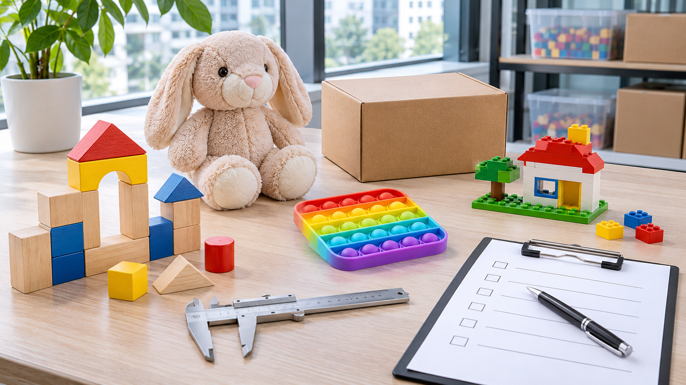
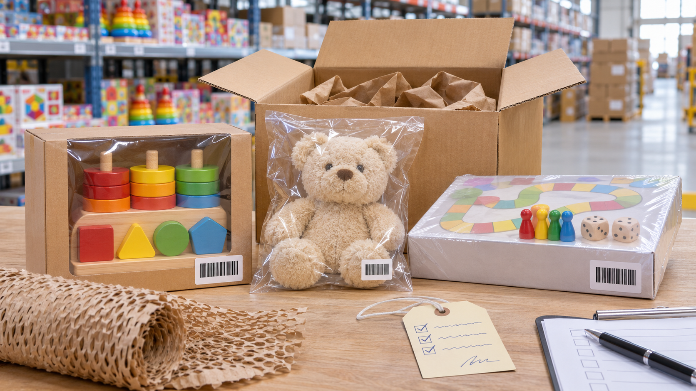

Direct answer: For a 2026 toy assortment, test a focused group of products rather than chasing every viral item. Current market signals point to creative and buildable play, calm or tactile screen-free play, and collectible/self-expression formats. Turn the signal into a controlled sourcing brief: define the buyer and age grade, avoid unlicensed IP, request applicable documents, approve a sample, and inspect the finished retail pack and carton before shipment.

1. Use trends as an assortment hypothesis, not a purchase order
Trade-fair trend reports for 2026 highlight interactive play, creative mindfulness, collectibles and self-expression. For an importer, that does not mean ordering every novelty. It means choosing a clear customer and testing a small, coherent range: an open-ended building kit, a tactile desk toy, a craft activity, a board game or a non-licensed collectible accessory.
Keep trend-led products separate from claimed licenses. If a product resembles a character, logo, game or brand, ask for proof of authorisation or select an original design. A supplier photograph or a marketplace listing is not permission to sell intellectual property in your market.
2. Write a toy sourcing brief that a supplier can quote correctly
Use one document for every supplier quote. Include a product photo or drawing, function, material, age grade, intended country, colour and SKU mix, quantity, target retail pack, carton limit, battery or magnet details, test/document request, target price and timing. If the product is for children, also state which components must not change without written approval.
| Brief field | Why it matters | Buyer check |
|---|---|---|
| Age grade and use case | Small parts, warnings and tests can depend on intended age and use. | Confirm it matches the product, packaging and instructions. |
| Material and components | A similar-looking toy may use different plastics, paint, stuffing, magnets or batteries. | List the non-negotiable materials and moving parts. |
| Target market | Documentation and labelling obligations vary by destination. | Get compliance advice for the actual market before approving bulk goods. |
| Retail pack and master carton | Damage, shelf presentation and freight volume are decided here. | Approve pack photos, dimensions, carton quantity and marks. |
| IP status | Trend-driven products can create avoidable trademark or copyright risk. | Use original designs or verify written licensing authority. |
3. Treat safety documents as a decision gate
Do not treat a test report as decoration. Ask what product version, material, age grade and destination it covers, and compare those details with the sample you are approving. In the United States, the CPSC identifies ASTM F963 as the mandatory toy safety standard for children’s toys under 16 CFR part 1250; the applicable sections and third-party testing depend on the product. For the EU, toys placed on the market must bear CE marking and manufacturers must assess relevant safety hazards.
These are not one-size-fits-all checklists and this guide is not legal advice. The importer, brand owner and other responsible parties should confirm the requirements for the destination market. A sourcing agent can help collect supplier files and coordinate samples, but cannot replace the party legally responsible for market compliance.

4. Approve a sample before you scale a trend
For a first order, compare samples on the exact version being quoted. Check appearance, dimensions, feel, sharp edges or loose parts where relevant, assembly, printed warnings, play function, odour, accessories, retail-pack fit and any claimed feature. Photograph the approved version and attach the record to the supplier order.
Trend testing also benefits from operational discipline. Start with a limited SKU count and a defined reorder rule. A product that attracts attention but arrives with weak packaging, unclear age information or inconsistent components is rarely a dependable retail line.
5. Inspect the finished goods, packaging and receiving record
Before final payment or export handoff, inspect against the approved sample and written brief. For each SKU, record quantity, visible defects, accessories, colour mix, retail-pack condition, warnings, barcode placement where used, inner-pack count and master-carton dimensions. For mixed supplier orders, record expected carton counts before warehouse receiving, then match arrivals to the packing list.
Use the pre-shipment quality-inspection checklist for the inspection workflow and the carton marks and packing-list checklist to keep cartons traceable through consolidation.
6. Plan the retail launch and shipping handoff together
Toy packaging influences both conversion and freight. Confirm the retail presentation, inner pack, master carton, carton marks and drop protection before booking freight. If products will go to an e-commerce warehouse, confirm any barcode, prep or carton-label requirements in the brief rather than adding them after the cartons are sealed.
YiwuBridge can compare suppliers, document sample decisions, coordinate quality checks and consolidate mixed cartons. For a starting scope, send the product references, target market, age range, expected quantity, packaging needs and required delivery date through the RFQ form.
Frequently asked questions
Which toy categories are practical to test in a first Yiwu order?
Choose a narrow assortment whose buyer, age range, materials and retail price band are clear. Open-ended creative kits, tactile or screen-free play products, building sets and non-licensed collectibles can be evaluated with samples, packaging and safety requirements before a larger order.
What should a toy sourcing brief include?
Include product references, age grade, intended market, material and battery details, required test or certification documents, quantity by SKU, retail pack, carton requirements, target price and delivery timing. Do not ask a supplier to assume which requirements apply.
Can a sourcing agent guarantee toy compliance?
No. An agent can collect supplier documents, coordinate samples and inspections, and help keep records organised, but the importer and responsible economic operators must confirm the requirements for the target market and obtain appropriate testing and documentation.
Build a controlled toy sourcing brief
Send product references, intended market, age range, quantity, retail-pack needs and timing. YiwuBridge can help compare supplier options and organise the next sourcing, QC and consolidation steps.